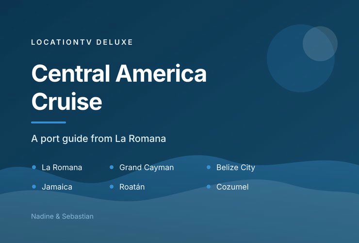

We're Nadine and Sebastian from LocationTV Deluxe. Our guide helps you choose what is actually worth your time at each stop on a cruise from La Romana through Central America and the Western Caribbean – especially in the water, and also on land.
The guide described here is in German; this page is the English overview of the same route.
Start and finish. Nearby, guided tours visit a marinarium with nurse sharks and stingrays in a semi-captive setting.
George Town is a tender port. Stingray City is shallow, even knee-deep: southern stingrays come close. You need a boat, but you do not have to snorkel there.
Shark Ray Alley in the Hol Chan area: nurse sharks and southern stingrays in the wild, in shallow water and with guides – by boat only.
In Ocho Rios or Montego Bay you'll find Dolphin Cove: bottlenose dolphins in a captive program. That should be labeled clearly in your photos and films.
On this island off Honduras there are guided dolphin encounters in a captive setting, sometimes with nurse sharks. That, too, should be labeled clearly.
Snorkel trips to El Cielo and the reefs: stingrays, sometimes nurse sharks, and turtles.
Strong settings for nature, culture and architecture – in this guide, without the typical shark and ray sites of the other port days.
For anyone sailing this route from La Romana who wants to decide, before each port day, which stop is worth a trip on the water and which one is better spent on land. It also helps if you want to film or photograph the encounters.
A round trip from and back to La Romana, including Grand Cayman, Belize City, Jamaica, Roatán, Cozumel and further stops such as Puerto Limón, Colón and Cartagena. For the water sites, the guide states what takes place in the wild, around habituated animals, or in captive programs.
The longer German article Karibik Kreuzfahrt: Haie, Delfine und Rochen goes deeper into the same stops. This page is the short overview.
More from LocationTV:
Travel films · ABC Islands cruise · Caribbean cruise: sharks, dolphins and rays (German) · Norway cruise (German) · Christmas market guide · Contact